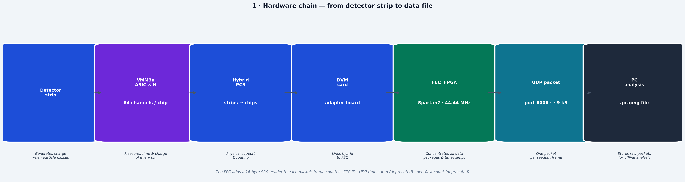
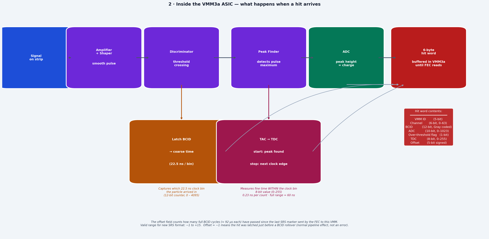
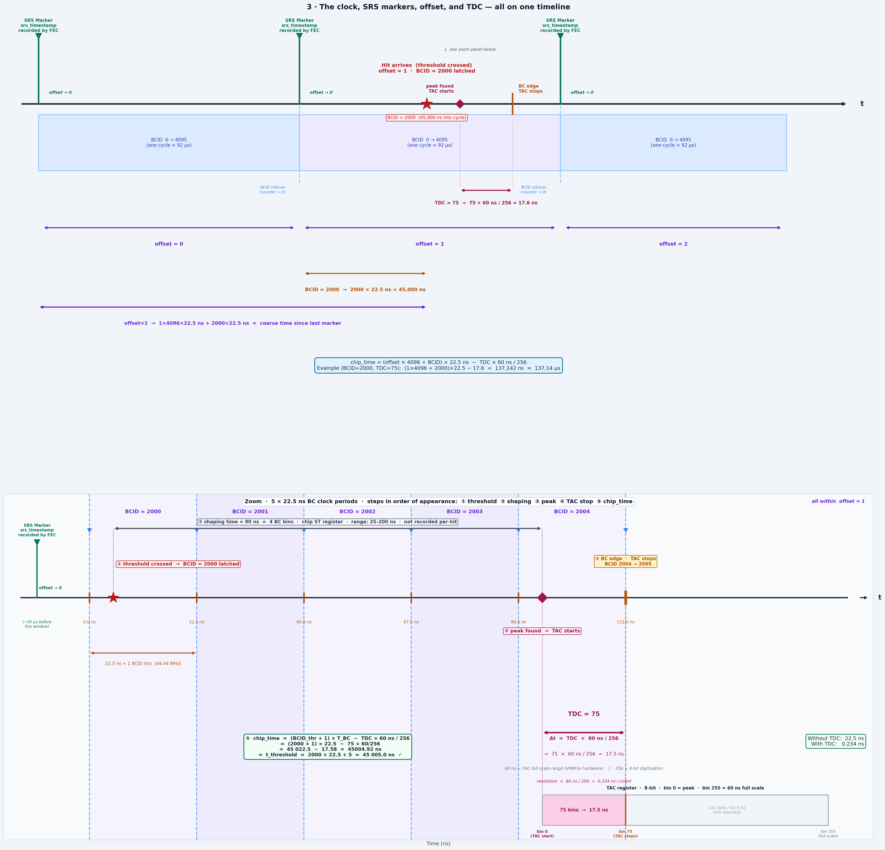
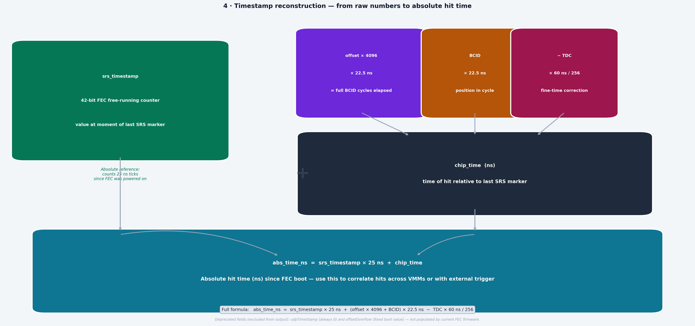

VMM3a / SRS data flow — schematics
How a hit travels from detector strip to UDP packet, and how the absolute hit timestamp is reconstructed — four reference schematics for VMM3a/SRS pcapng analysis.
Four reference schematics for the VMM3a / SRS readout chain as used on the P2 basket hybrid detector at CEA Saclay. They cover the signal path from a detector strip to a UDP packet on the network, what happens inside the VMM3a ASIC, how the clock, markers, offset and TDC relate to one another, and how the four recorded time fields combine into one absolute hit timestamp.
These are the drawings I keep coming back to when reading raw pcapng captures — the timestamp reconstruction in particular is easy to get subtly wrong, and panel 3 is the one that settles which BC bin a hit actually belongs to.
Constants the schematics refer to
| Quantity | Value | Where it matters |
|---|---|---|
| Channels per VMM3a | 64 | Hardware chain |
| FEC FPGA clock (Spartan7) | 44.44 MHz → 22.5 ns per BC bin | Coarse time |
| BCID counter | 4096 ticks ≈ 92 µs per cycle | Offset reset by SRS markers |
| TDC resolution | 60 ns / 256 = 0.234 ns per count | Sub-BC fine time |
Shaping time (chip ST register) | 25–200 ns, not recorded per hit | Threshold → peak delay |
srs_timestamp | 42-bit FEC free-running counter at 40 MHz → 25 ns | Long-range absolute reference |
| Network | 9 010-byte UDP datagrams, port 6006 | Capture / decoding |
1 · Hardware chain


2 · VMM3a hit processing


3 · Clock, markers, offset, and TDC


The five steps in the bottom panel, in order:
- Threshold at t = 5 ns latches BCID = 2000.
- Shaping time = 90 ns (4 BC bins; chip
STregister, range 25–200 ns, not recorded per hit) carries the pulse from threshold to peak. - Peak found at t = 95 ns in BCID = 2004 — the TAC starts.
- BC edge at t = 112.5 ns — the TAC stops; TDC = 75 → 17.5 ns.
chip_time = (BCID_thr + 1) × T_BC − TDC × 60/256 ≈ t_threshold, with a resolution of 0.234 ns per count.
4 · Timestamp reconstruction


srs_timestamp
(42-bit FEC free-running counter at 40 MHz) provides the long-range absolute reference, while
chip_time gives the fine-grained hit position within the ~92 µs BCID cycle.
Click for full resolution.abs_time_ns = srs_timestamp × 25 ns
+ (offset × 4096 + BCID) × 22.5 ns
− TDC × 60 ns / 256Provenance and how to regenerate
All four panels are drawn by a single script, which depends only on
matplotlib — no data files and no ROOT, so it runs anywhere:
cd P2_basket_online_analysis
python3 vmm_srs_dataflow_schematic.pyIt writes schematic_1_hardware_chain.png through
schematic_4_timestamp_reconstruction.png. The script is attached here as well:
vmm_srs_dataflow_schematic.py.
The figures live in P2_basket_online_analysis, where a blanket
*.png rule in .gitignore keeps them out of version control — the
repo holds the generator and the viewer page, but not the rendered images. This note is
therefore also where the rendered panels are kept.